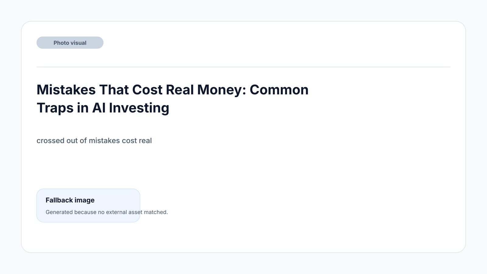

TL;DR
Start with a diversified AI ETF—BOTZ or IRBO—for your first $500 investment. Avoid betting all on single AI stocks like Nvidia as a beginner. Follow a 30-day tracking period before adding more or picking individual names. Most losses come from chasing headlines or panic selling after drops. ETFs are simple, less risky, and ideal for hands-on learning.
Quick Answer: Which AI Stock Should a Beginner Buy First With $500?

If you're a beginner with $500, start with a diversified AI ETF like Global X Robotics & Artificial Intelligence ETF (BOTZ) or iShares Robotics and Artificial Intelligence Multisector ETF (IRBO).
Buying a single stock like Nvidia (NVDA) may give explosive growth or sharp drops, but an ETF protects against picking the wrong winner. With $500, avoid overloading on one flashy tech name—the best move for most new US and EU investors is buying shares of an AI-focused ETF first, then learning from its performance for at least 3 months before betting bigger on individual companies.
Why Most Beginners Pick the Wrong AI Stocks

The classic mistake: chasing the biggest AI headline without understanding what the company actually sells. Too many beginners see Nvidia, Google, or C3.ai pop up in the news and buy in at a local peak—only to panic-sell the first day a stock drops 10%.
It’s tempting to pick one stock that sounds most like 'AI.' In reality, AI profits often come from companies you barely see in the headlines: infrastructure suppliers, semiconductor foundries, and dividend-paying tech ETFs. Choosing a single AI stock means betting on one success story—fine if you like risk, but fatal when the hype cycle reverses and prices drop for weeks.
Another trap: assuming US tech giants act the same as EU or global AI players. But regulations, data policies, and market size vary wildly between the US, Germany, and France. Many beginners expect instant results, not realizing AI adoption pans out over 2–5 years, not a few months. The actual decision: do you want to learn from a wild ride, or lock in steady progress with less drama?
For those considering deeper comparisons of major AI stocks vs. ETFs, see our breakdown of single picks versus baskets in our portfolio allocation series.
A 30-Day Screening Process for Smarter AI Investing

Successful AI investing isn’t magic; it’s a routine. Here’s a repeatable workflow tailored to new US and EU investors: 1. List leading AI ETFs and top-performing AI-related stocks (use tools like Yahoo Finance, JustETF, or your brokerage’s featured list). 2. Over 30 days, track daily or weekly price and news movement for each—note any sudden jumps or drops and the reason why. 3. Evaluate three basic criteria every week: - Is this fund or stock profitable or at least cash flow positive? - Is it in the US, EU, or a global market you understand? - Is its 3-year chart less volatile than meme stocks—you want some dips, not wild swings. 4. After 4 weeks, review: if a stock or ETF dropped 10–15% on negative AI news, could you realistically hold without panic selling? If not, lean heavier into diverse ETFs. 5. End of month: rebalance to maintain no more than 30% of your $500 in any single name—the rest in broader AI funds.
Repeating this monthly sharpens your instincts and helps prevent hasty trades. It’s one reason seasoned long term investors outlast short-term hype buyers.
A Simple Beginner Example With Numbers: Investing $500 in Real AI Picks

Let’s say you have $500 today and want exposure to AI growth without betting the farm on any single name.
Step-by-step scenario: 1. Allocate $300 to BOTZ (Global X Robotics & Artificial Intelligence ETF). Each share is around $30; you buy 10 shares, covering sectors from industrial robots to semiconductor firms. 2. Allocate $150 to NVDA (Nvidia), currently trading at $100+ per share. You buy fractional shares in most modern brokerages: $150 nets you about 1.3 shares. 3. Hold back $50 for fee coverage, future swaps, or to average into another name (like ASML—key for EU investors—once you learn more in the coming month).
Result: Say AI news breaks and Nvidia rises 12% in month one, but BOTZ falls 5% due to weaker Asian tech performance. You’re still up overall, and not crushed by a single disappointing report.
This approach is simple, resilient, and perfect for reviewing quarterly. Want more scenarios? See our alternatives for how to split $1000 or more in AI products.
Mistakes That Cost Real Money: Common Traps in AI Investing

Two beginner mistakes cost more than any others: buying the biggest AI headline stock after it’s spiked, and skipping research entirely.
Example: Many first-timers bought C3.ai in 2021 at over $150, only to watch it collapse below $25 after the initial AI excitement faded. This is what happens if you mistake a news headline for a real trend.
Another costly misstep: ignoring volatility. AI stocks frequently swing 4–10% per week. If you panic-sell at every dip, you’ll almost always lock in a loss. The tradeoff: stability from ETFs versus wild wins and losses from individual picks. Decide if your stomach—and schedule—can handle regular swings.
Finally, buying on hype events (like ChatGPT launches) usually means buying tops. Savvy investors wait for a correction or buy over several weeks.
If you want an actionable checklist to spot these traps before your next buy, refer to our beginner mistakes article for real investor case studies.
Which Tools or ETFs Make This Simpler? Comparing AI Investment Choices
For new AI investors, using ETFs like BOTZ or IRBO simplifies the process: you get exposure to dozens of AI players at once, managed by pros.
But how do these compare against researching single stocks or using AI stock-picking tools like Seeking Alpha or eToro? The right match depends on your comfort, goals, and whether you want steady learning or big individual upside. Here's a snapshot:
| Feature | BOTZ ETF | IRBO ETF | Nvidia Stock |
|---|---|---|---|
| Diversification | High (30+ holdings) | High (100+ holdings) | None |
| Volatility | Medium | Medium | High |
| Min investment | No minimum, fractional shares allowed | No minimum, fractional shares allowed | No minimum, fractional shares allowed |
| Expense Ratio | 0.68% | 0.47% | n/a |
| 12-Month Return (as of spring 2024) | 19.8% | 16.4% | ~48% (very volatile) |
| Ideal for Beginners? | Yes | Yes | Only if willing to accept high swings |
ETFs like BOTZ and IRBO provide automatic diversification and lower risk per dollar compared with single stocks like Nvidia. Start with the ETF for your first $500, then experiment with individual names after tracking patterns for a few months. Avoid pricey AI newsletters, unmanaged meme-stock forums, and stock-picking robots until you’ve seen real portfolio swings firsthand.
FAQ
What are the risks of investing in AI stocks?
AI stocks are highly volatile and tend to swing sharply on both positive and negative news. Technical shifts, competition, or regulatory changes can crush valuations suddenly, especially in smaller or less diversified companies. Always invest only what you can afford to lose, keep your first exposure limited, and use ETFs until you have more experience riding out market dips.
How much should I invest in AI stocks as a beginner?
For beginners in the US or EU, $500 is a common test amount, representing a small, manageable percentage of savings. Never go all-in; use 70–80% on diversified ETFs and keep the rest for learning about individual stocks or funds as your comfort grows. This limits regret and gives you time to build skill, not just chase recent winners.
Should I pick US or EU AI stocks first?
For most beginners, start with global or US-focused AI ETFs—these are widely available and cover both regions. If you invest in individual EU AI leaders, like ASML, ensure you understand the company’s market, regulation, and local risks. Mixing US and EU picks can add stability, but don’t add complexity until you’ve tracked both for at least a month.
Are there AI index funds suitable for regular automatic investing?
Yes. Both BOTZ and IRBO accommodate recurring investments, making them good choices for dollar-cost averaging. Most brokerages in the US and EU allow you to auto-buy these ETFs monthly—perfect for building exposure without trying to time the market.
This article is reviewed by a real investor for accuracy, clarity, and practical usefulness. It is updated when new products or major changes in the AI investing space occur.
Next step
Use the article as a decision point, not just reading material. Your next system matters more than more browsing.
Search more articles
Find related tools, workflows, and guides.
Photo credits
- Photo 1: Austin Distel via Unsplash
- Photo 2: Tech Daily via Unsplash
- Photo 3: Hans Eiskonen via Unsplash
- Photo 4: sebastiaan stam via Unsplash